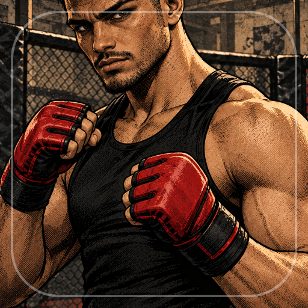

<- all projects

Cornercraft MMA
PC
Volume
Live
Scout fighters, plan smart camps and call the corner between rounds.
A neighborhood MMA gym is counting on you. The founder has retired and left you the key. Scout overlooked talent, sign up to eight fictional fighters and guide the team from local shows to title night across 40 fight nights on four regional circuits. Build six-session camps of striking, wrestling, grappling or recovery while managing fatigue, scout each opponent, then call distance, clinch or submission between three simulated rounds. Every result can be explained from preparation, fatigue, morale and tactics. Pick event contracts and upgrade your coach, recovery room and gym as the story moves on through wins and losses.